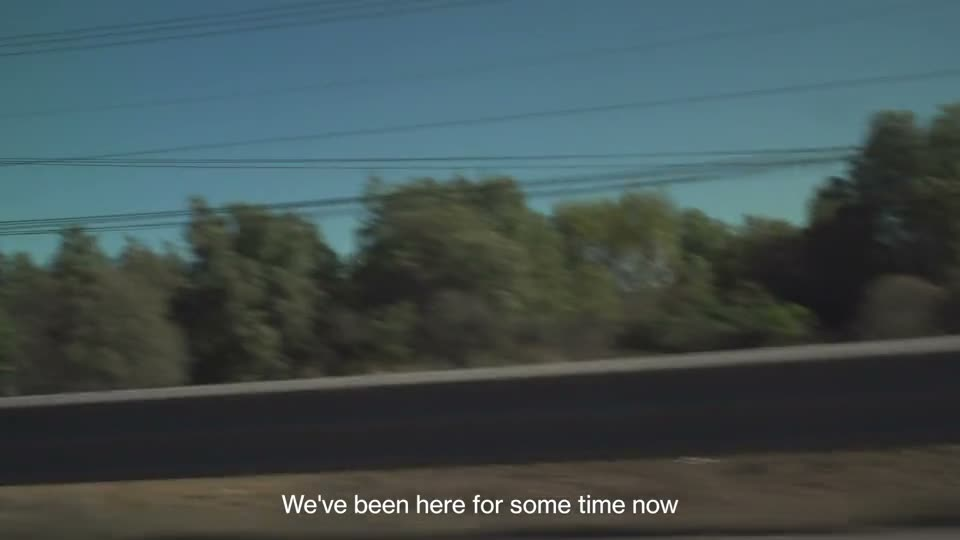
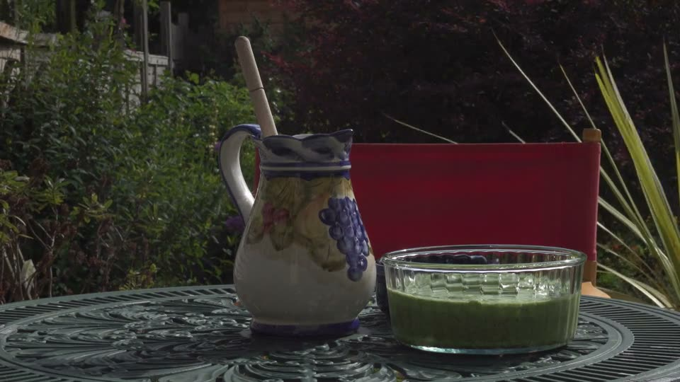
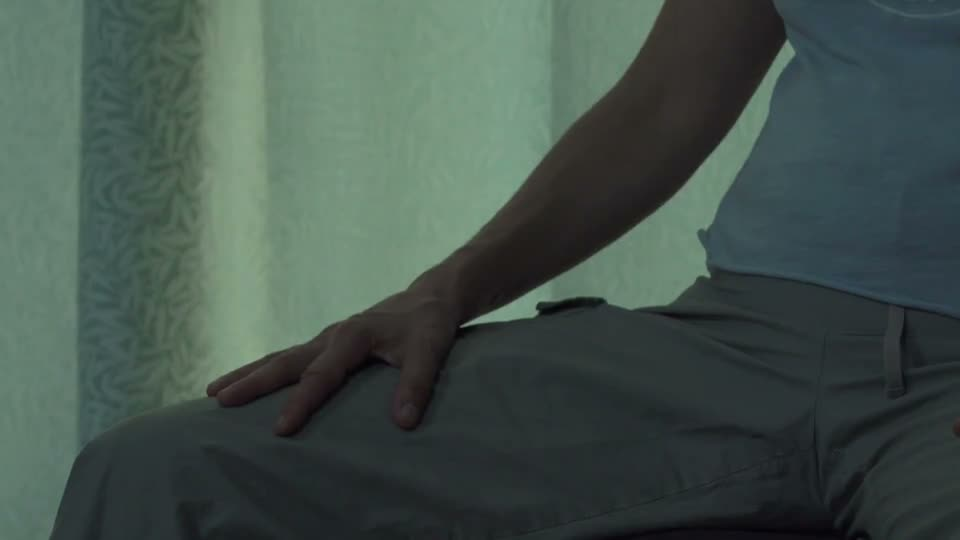
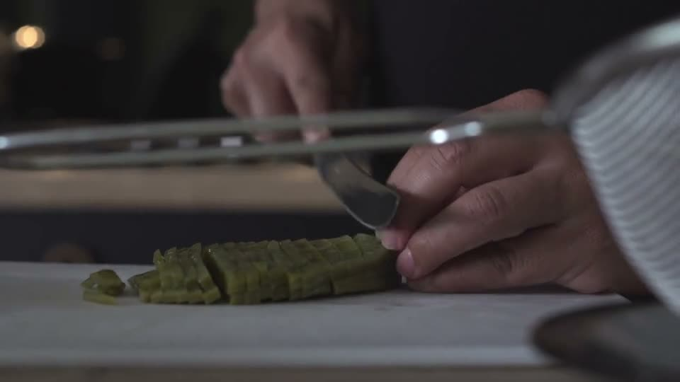
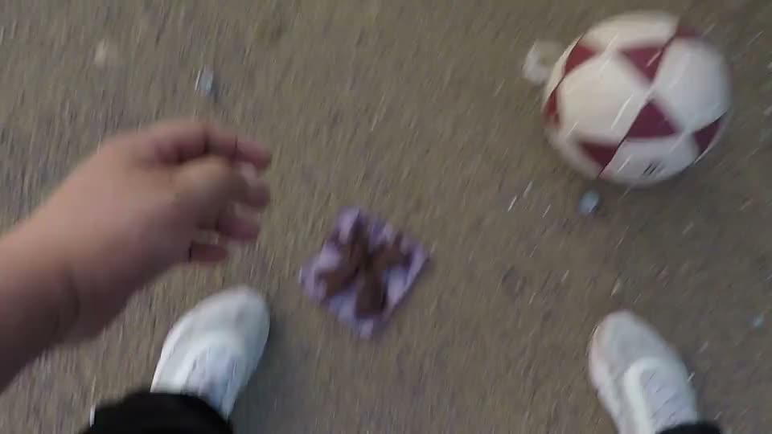

Film production company · Mexico City
«El Sentir de las Montañas» (The Feel of the Mountains) is a work made with members of the Latin American community in London. The documentary unfolds in three chapters through which we meet different people. The film is an exploration of arrival, community and healing: we hear the story of an arrest, meet a community that plays volleyball, and step into an alternative therapy.




